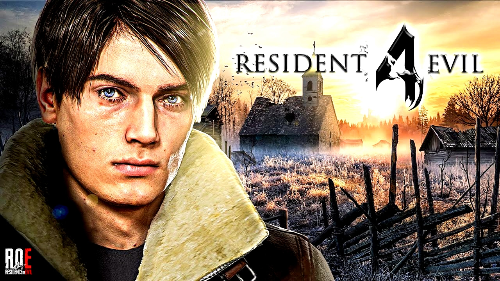
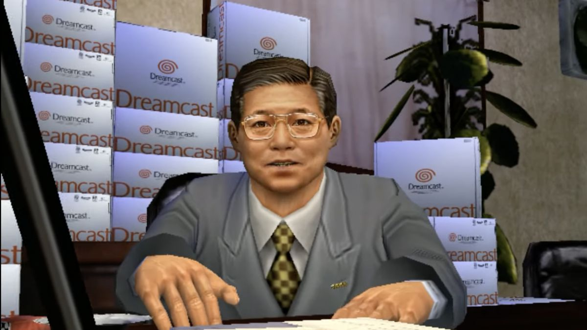
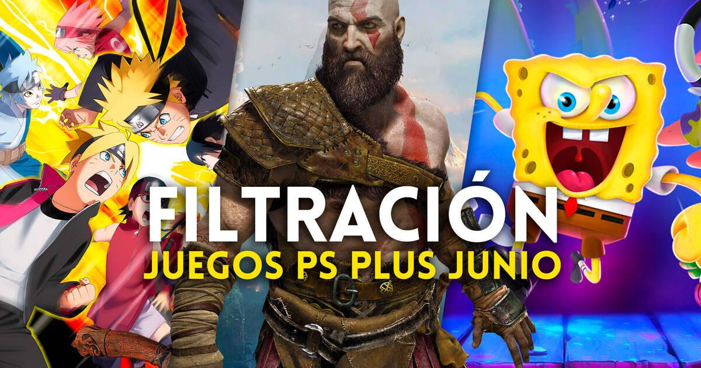
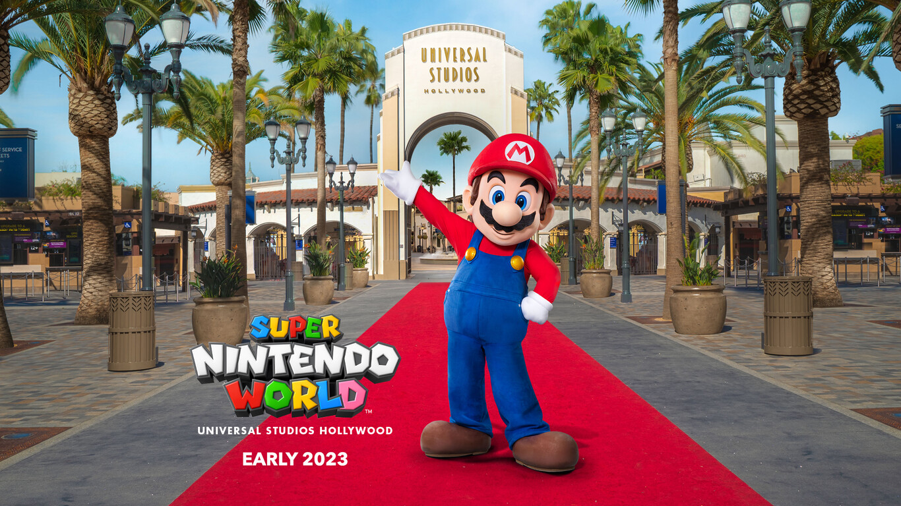
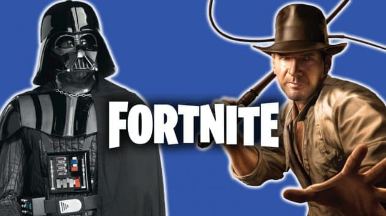

¿Qué es Diccionario Gamer?
Somos una página dedicada a hacer reseñas de ciertos videojuegos basadas en nuestra experiencia jugando, nos gusta expresarnos líbremente y dar nuestra opinión teniendo una mentalidad abierta para sugerencias y opiniones de los usuarios de la web.
SEAN BIENVENIDOS GAMERS :)
Noticias
Nueva season en Fortnite
¡Mira nada más! el remake de Resident Evil 4 se aproxima y se mira genial
Triste noticia: fallece Hidekazu Yukawa exdirector de SEGA, conocido como Mr. SEGA
Estos son algunos juegos que se incluirán en el PS Plus del mes de Junio, no olvides adquirir tu membresía
Super Nintendo World llega a Hollywood con su parque temático

El límite de almacenamiento se amplió y ahora puedes almacenar más Pokémons
¡Aparecen Darth Vader e Indiana Jones en la nueva temporada de Fortnite!